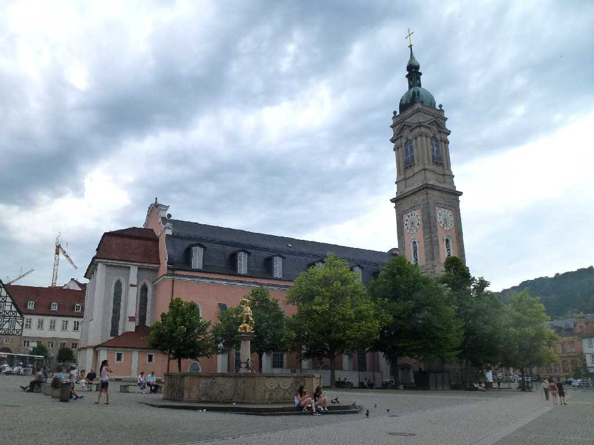
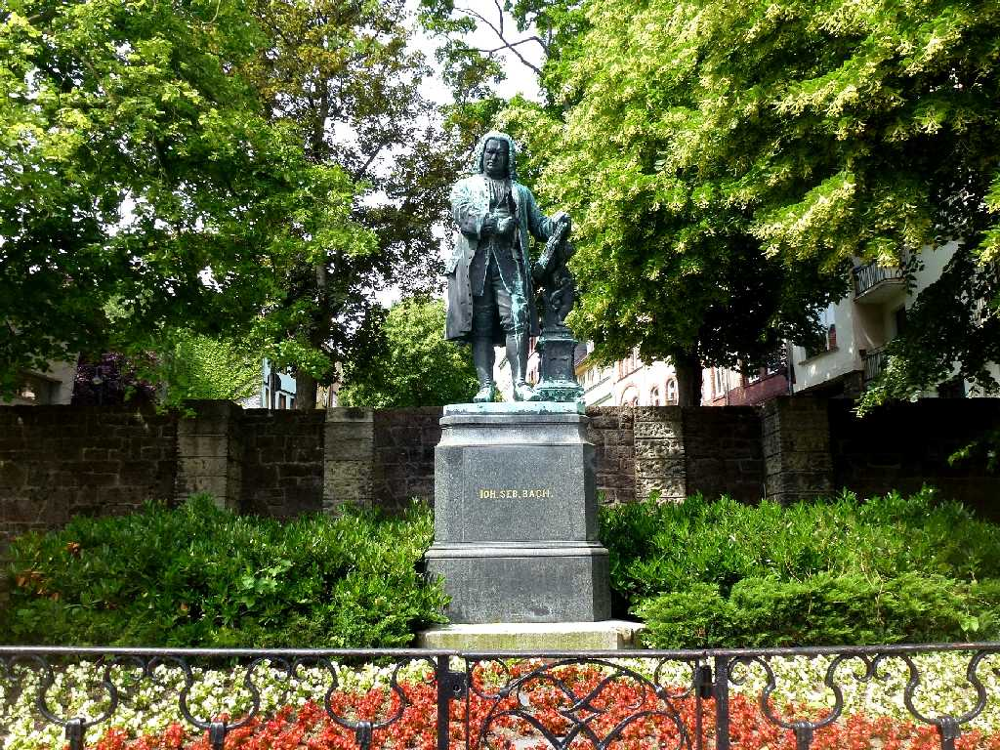
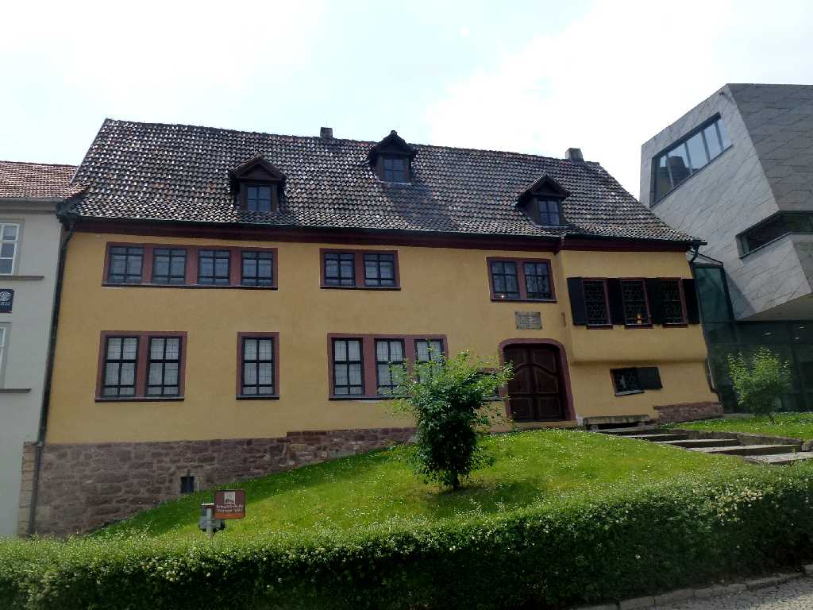
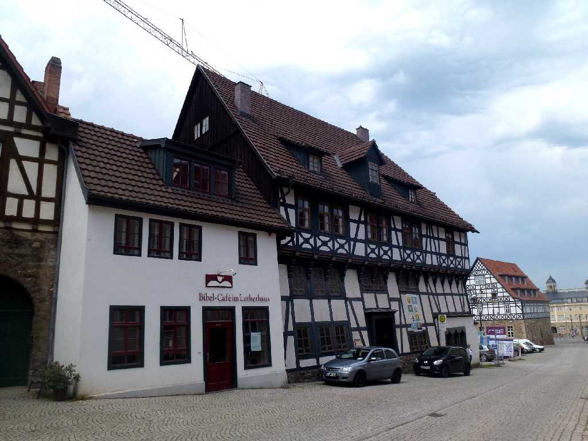
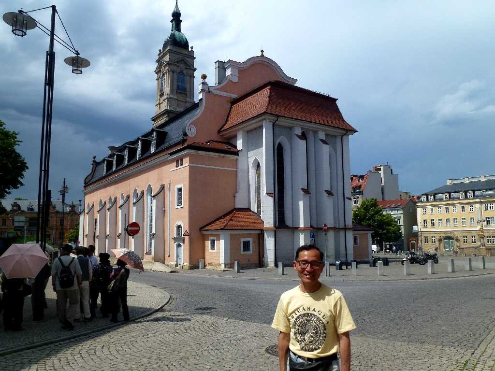

Georgenkirche Marktplatz Eisenach
アイゼナッハの守護聖人聖ゲオルグを祀るゴシック様式の教会

Bach
アイゼナッハはバッハ生誕の地として名高い

Bachhaus
バッハはこの地で生まれ少年時代にこのバッハハウスで過ごした

Lutherhaus
ルターが１４９８年から３年間ラテン語を学ぶため１５歳から過ごした家で聖書をドイツ語に訳し宗教改革の中心人物となった

July 10 2014 Georgenkirche
聖ゲオルグ教会はバッハが洗礼を受けた教会でありルターは教会の付属学校でラテン語を学んだ